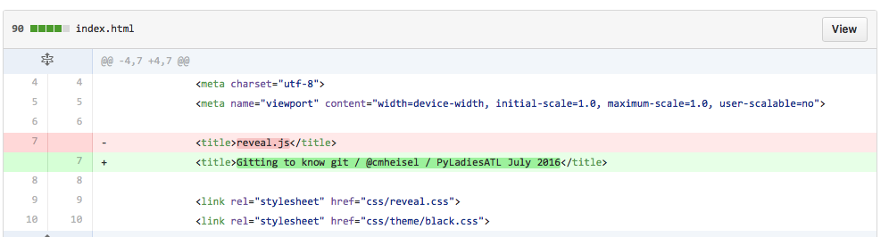

Gitting to know git
@cmheisel / PyLadiesATL July 206
Who am I?

What is source/version control?

Track changes to files...
What changed...
Who changed it...
When they changed it...
Why?
1. Repositories
~/Desktop $ mkdir -p demo-repo
~/Desktop $ cd demo-repo/
~/Desktop/demo-repo $ git init .
Initialized empty Git repository in /Users/cheisel/Desktop/demo-repo/.git/
All in one folder
~/Desktop/demo-repo $ tree .git/
.git/
├── HEAD
├── config
├── description
...
├── info
│ └── exclude
├── objects
│ ├── info
│ └── pack
└── refs
├── heads
└── tags
GitHub makes this easy
2. Clone
~/Desktop $ git clone git@github.com:cmheisel/demo-repo.git
Cloning into 'demo-repo'...
remote: Counting objects: 3, done.
remote: Total 3 (delta 0), reused 0 (delta 0), pack-reused 0
Receiving objects: 100% (3/3), done.
Checking connectivity... done.
~/Desktop $ ls -a1 demo-repo/
.
..
.git
README.md
3. Changes
~/Desktop/demo-repo $ git status
On branch master
Your branch is up-to-date with 'origin/master'.
Changes not staged for commit:
(use "git add <file>..." to update what will be committed)
(use "git checkout -- <file>..." to discard changes in working directory)
modified: README.md
Untracked files:
(use "git add <file>..." to include in what will be committed)
awesome-ship-names.py
no changes added to commit (use "git add" and/or "git commit -a")
~/Desktop/demo-repo $ git add README.md
~/Desktop/demo-repo $ git add awesome-ship-names.py
~/Desktop/demo-repo $ git status
On branch master
Your branch is up-to-date with 'origin/master'.
Changes to be committed:
(use "git reset HEAD <file>..." to unstage)
modified: README.md
new file: awesome-ship-names.py
4. Commit

$ git commit -m "Update README, add ship name generator"
[master c253dc9] Update README, add ship name generator
2 files changed, 17 insertions(+), 1 deletion(-)
create mode 100644 awesome-ship-names.py
$ git status
On branch master
Your branch is ahead of 'origin/master' by 1 commit.
(use "git push" to publish your local commits)
nothing to commit, working directory clean
5. Push

$ git push
Counting objects: 4, done.
Delta compression using up to 8 threads.
Compressing objects: 100% (4/4), done.
Writing objects: 100% (4/4), 530 bytes | 0 bytes/s, done.
Total 4 (delta 0), reused 0 (delta 0)
To git@github.com:cmheisel/demo-repo.git
a07ece4..c253dc9 master -> master
Branch

$ git status
On branch master
Your branch is up-to-date with 'origin/master'.
nothing to commit, working directory clean
$ git checkout -b add-more-names
Switched to a new branch 'add-more-names'
$ git branch
* add-more-names
master
$ git status
On branch add-more-names
nothing to commit, working directory clean
...add some text and commit it to the branch...
$ git diff master
diff --git a/awesome-ship-names.py b/awesome-ship-names.py
index 60550ae..1404787 100644
--- a/awesome-ship-names.py
+++ b/awesome-ship-names.py
@@ -11,6 +11,11 @@ SHIP_NAMES = [
"Columbia",
"Discovery",
"Atlantis",
+ "Challenger",
+ "Endeavour",
+ "SDF-1",
+ "Eagle",
+ "Friendship 7",
]
Merging
$ git status
On branch add-more-names
Your branch is up-to-date with 'origin/add-more-names'.
nothing to commit, working directory clean
$ git checkout master
Switched to branch 'master'
Your branch is up-to-date with 'origin/master'.
$ git merge add-more-names
Updating c253dc9..49a014a
Fast-forward
awesome-ship-names.py | 5 +++++
1 file changed, 5 insertions(+)